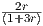
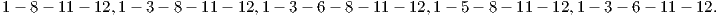

This homework will not be collected or graded.
The first three questions concern the following linear program
has dual problem
-
1.
- Let r > 0 and μ =
 . Show that x(r) := (4r,1 + r,2 + 2r) solves the barrier problem
. Show that x(r) := (4r,1 + r,2 + 2r) solves the barrier problem
for any r > 0. (Hint: this is equivalent to showing that x(r) is on the central path. You need to find
dual feasible (y(r),s(r)) so that (x(r),y(r),s(r)) satisfy the central path conditions.) (Lecture
25)
-
2.
- Find x := limr→0x(r). Use duality to prove that this limit point x is optimal for (1). (Lecture
25)
-
3.
- Show that x is not a basic feasible solution for (1). How can we have an optimal solution to the
standard form problem (1) that is not a basic feasible solution? (Lecture 25)
-
4.
- Knapsack Gomory: Consider the knapsack problem
Valid constraints for the LP relaxation include
The point x = (, ,,)T is feasible in the LP relaxation of the knapsack problem, and it also
satisfies constraints (4)–(7). Find nonnegative multipliers t1,t2,t3,t4 for the constraints (4)–(7) and
add them together to give a constraint ∑
j=14ajxj ≤ b, and then round down each aj and b to give a
valid constraint ∑
j=14⌊aj⌋xj ≤⌊b⌋ for the knapsack problem which is violated by x. (Hint: try to
choose t1,t2,t3,t4 so that each component aj is integral, while b is not integral.) (Lecture
23)
,,)T is feasible in the LP relaxation of the knapsack problem, and it also
satisfies constraints (4)–(7). Find nonnegative multipliers t1,t2,t3,t4 for the constraints (4)–(7) and
add them together to give a constraint ∑
j=14ajxj ≤ b, and then round down each aj and b to give a
valid constraint ∑
j=14⌊aj⌋xj ≤⌊b⌋ for the knapsack problem which is violated by x. (Hint: try to
choose t1,t2,t3,t4 so that each component aj is integral, while b is not integral.) (Lecture
23)
-
5.
- (Lecture 26) Note that all arcs point from a lower-numbered node to a higher-numbered node in the
network below, which can be exploited to design dynamic programming algorithms to answer the
questions below.
-
(a)
- Use dynamic programming to find all the shortest paths from node 1 to node 12 in the
graph.
-
(b)
- Use dynamic programming to find all the longest paths from node 1 to node 12 in the
graph.
In addition, read Sections 1.8, 21.1 and 7.8 from the text.
Solving the homework problems (and other problems from the text) will improve your understanding of
the material.
Working out the problems yourself will greatly improve your understanding of the material and
help you on the exams. You can ask questions on piazza, in addition to using office hours or
email.
Exam 3 will be on Friday December 9 and will cover integer programming, interior point methods, and
dynamic programming. There is no final exam.
Solutions
-
1.
- We must have xi(r)si(r) = μ(r) for i = 1,2,3. This implies si(r) = μ(r)∕xi(r) for i = 1,2,3. We
get:
-
(a)
- s1 = = , which implies y = s1 =
 .
.
-
(b)
- s2 = = , which implies y = 1 -
 s2 = 1 -
s2 = 1 - = .
= .
-
(c)
- s3 = = , which implies y = 1 - s3 = 1 - = .
Since all three components lead to the same value y = , we have a point that satisfies the
central path conditions, so x(r) solves the barrier problem.
-
2.
- x = (0,1,2), which has value 4.
We also have a dual feasible solution y = 1 with dual value 4. Since the primal and dual values
agree, we are optimal.
-
3.
- Since problem (1) only has one equality constraint, any basic feasible solution will have at
most one positive component. The point x has 2 positive components, so it cannot be a
BFS.
Problem (1) has multiple optimal solutions. The limit point x is in the interior of the optimal
face.
-
4.
- There are many possible choices, any of which is an acceptable solution:
- t = (2,1,1,1)T :
Adding together (4)–(7) with these multipliers gives
and rounding down gives the valid constraint for the knapsack problem that cuts off x
of:
- t = (2,1,1,4)T :
Adding together (4)–(7) with these multipliers gives
and rounding down gives the valid constraint for the knapsack problem that cuts off x
of:

Using t = (2,1,4,1)T and t = (2,4,1,1)T lead to
and
respectively. Note that these inequalities are implied by (8) with one of (5)–(7).
- t = (1,2,2,2)T :
Adding together (4)–(7) with these multipliers gives
and rounding down gives the valid constraint for the knapsack problem that cuts off x
of:
Note that (8) is implied by (9), so (9) is the strongest inequality presented here.
-
5.
- In both parts, we have six stages:
- Stage 0: find shortest/longest path to node 1.
- Stage 1: find shortest/longest path to nodes 2 and 3.
- Stage 2: find shortest/longest path to nodes 4, 5 and 6.
- Stage 2: find shortest/longest path to nodes 7, 8 and 9.
- Stage 2: find shortest/longest path to nodes 10 and 11.
- Stage 2: find shortest/longest path to node 12.
The nodes are our states. We let fn(s) denote the shortest/longest path to node s in stage n. Note
that f0(1) = 0 in both problems. We let xn denote the possible predecessors of node s. The
recursion is
where c(u,v) denotes the edge cost and k is the stage for the predecessor xn. For the shortest path,
we have
and for the longest path, we have
-
(a)
- Shortest paths:
Stage 1: We get
Stage 2: We get
Stage 3: We get
Stage 4: We get
Stage 5: We get
Hence the shortest path has length 16.
Backtracking through the tables shows that the shortest paths are:
-
(b)
- Longest paths:
Stage 1: We get
Stage 2: We get
Stage 3: We get

Stage 4: We get
Stage 5: We get
Hence the longest path has length 20.
Backtracking through the tables shows that the longest paths are:
